Principle 01
Clarity before complexity.
Every result should answer the user’s immediate question first: is this safe, suspicious, or dangerous?
Overview
SheepGuard is a mobile concept that helps users quickly judge whether a call or message is safe, suspicious, or manipulative. Instead of relying on dense security language, the experience translates scam detection into a more intuitive visual story.
The project turns the fable of “the wolf in sheep’s clothing” into a product metaphor: harmless appearances can hide danger, and interface feedback should make that risk instantly legible.
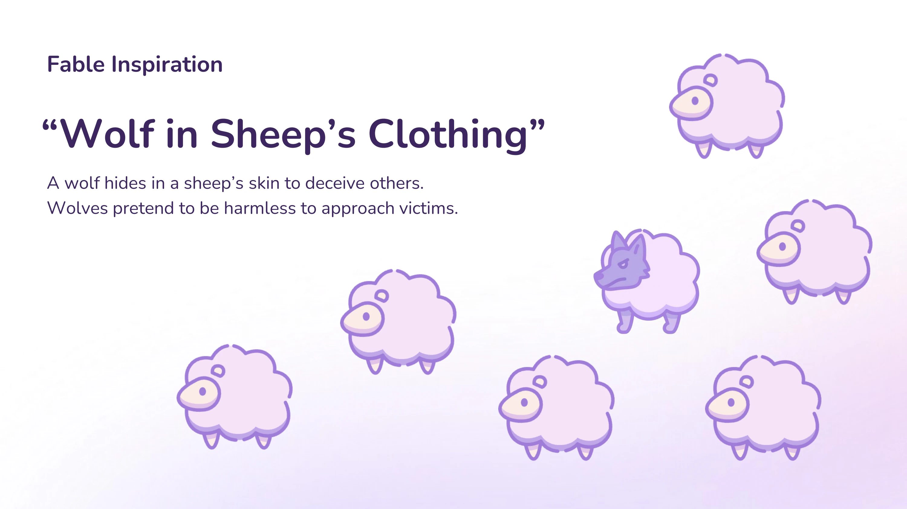
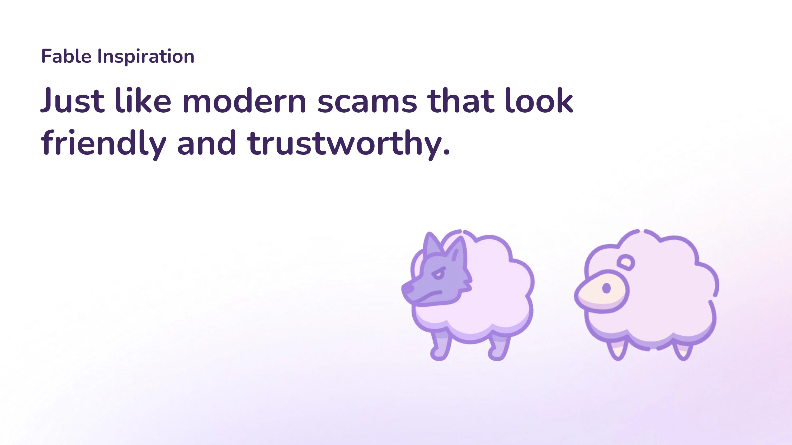
Concept
The opening narrative builds directly from the fable and reframes it in a modern context: today’s scams often arrive disguised as banks, schools, shipping notices, or friendly strangers.
That metaphor becomes the core product logic. Safe interactions stay “sheep-like,” while scam patterns trigger a visual reveal that exposes the wolf underneath.
Problem
Students and everyday users often receive fake banking messages, suspicious delivery links, or unknown calls that feel urgent. In those moments, users need a fast signal they can trust rather than a long explanation they have to decode.
UX / UI Design
Concept App
Scam Detection
Prototype + Testing
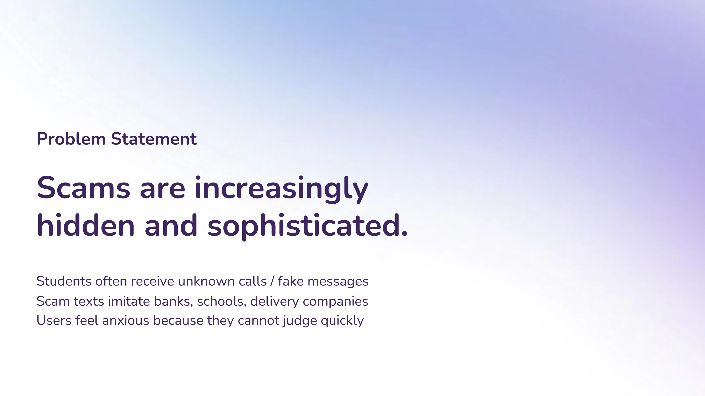
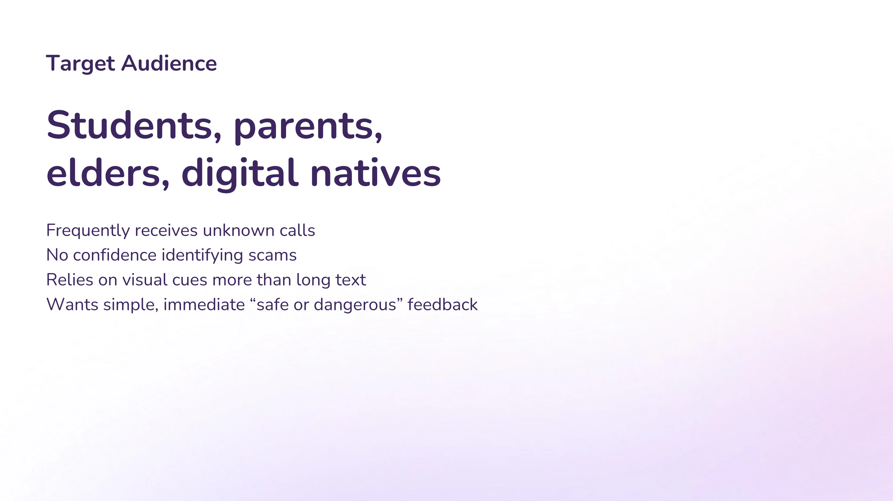
Principle 01
Every result should answer the user’s immediate question first: is this safe, suspicious, or dangerous?
Principle 02
The sheep-to-wolf metaphor turns hidden danger into a visual response users can feel without reading paragraphs.
Principle 03
The app does not only warn users in the moment; it gradually teaches them how scam patterns work.
Audience + Journey
The journey map focused on a college student who frequently receives unfamiliar calls and suspicious texts, worries about making mistakes, and depends on strong visual cues to decide quickly.
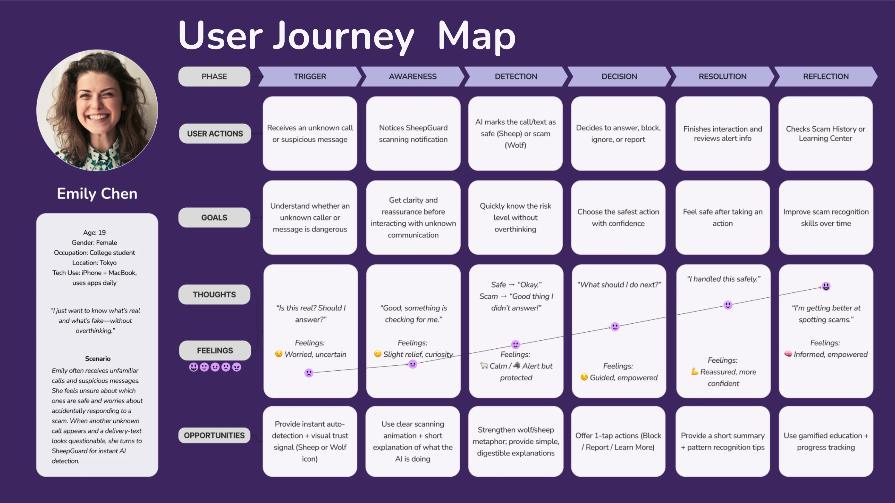
Visual Metaphor
Rather than presenting only a score or warning badge, SheepGuard uses metaphor as interaction feedback. The sheep represents safety and calm; the wolf reveal dramatizes deception and risk the moment suspicious behavior is detected.
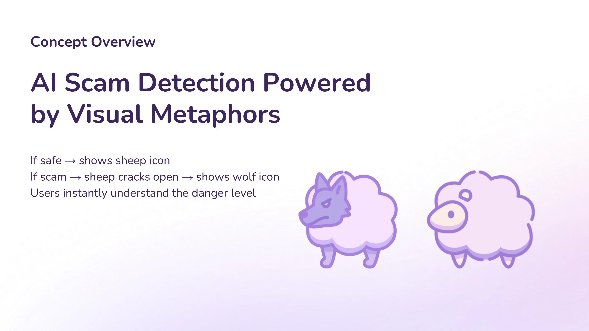
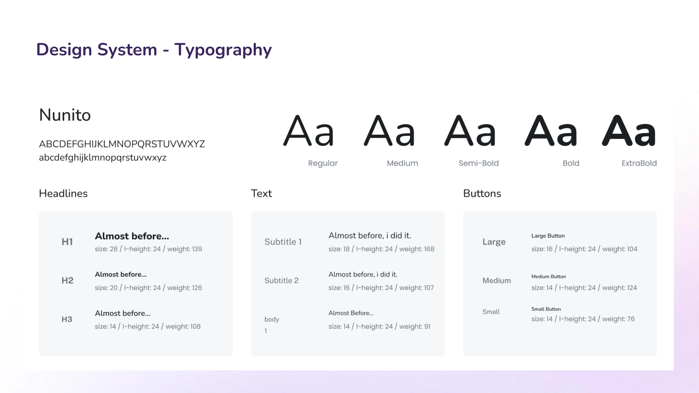
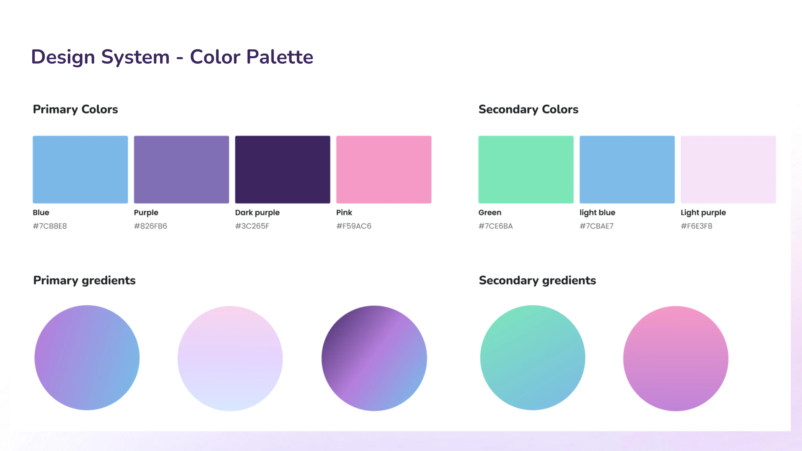
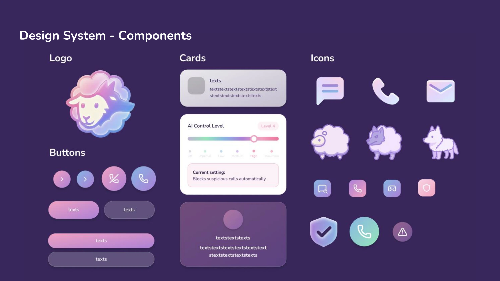
Flow
The app flow centers on four entry points: scan suspicious messages, detect scam calls, practice inside a simulation game, and learn common scam patterns through quick educational modules.
This makes the concept feel protective in the short term while also helping users build longer-term scam literacy.
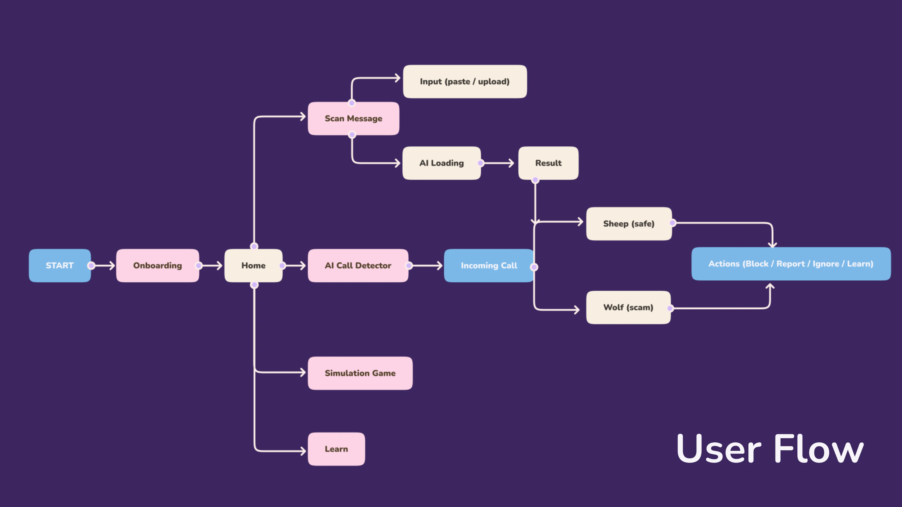
Feature 01
Users can paste suspicious content or upload a screenshot, then receive a result that balances immediate feedback with a short explanation.
Feature 02
A configurable protection level controls how proactive the app becomes when unfamiliar callers or risky patterns appear.
Feature 03
Educational modules and practice interactions help users build pattern recognition instead of depending on alerts forever.
Prototype
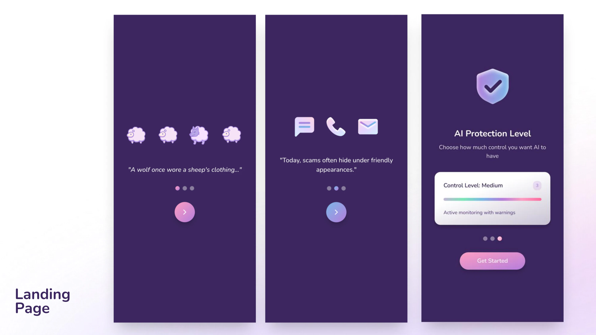
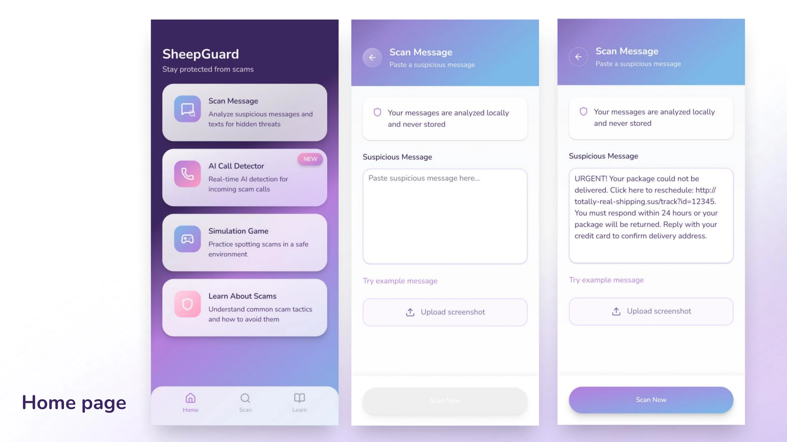
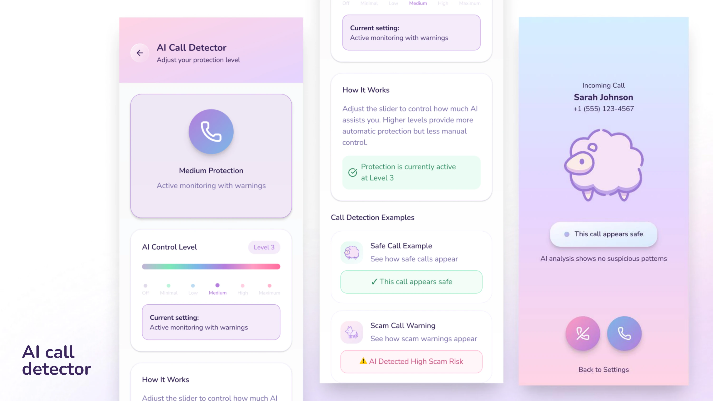
Interaction Logic
Rather than forcing a single behavior, the app introduces adjustable AI control so users can choose between light assistance and stronger intervention. That makes the concept feel more respectful, especially for people with different risk tolerance levels.
Warning State
This sequence turns a vague suspicion into a visible alert. The escalation from sheep to wolf makes the warning memorable and gives the user a clear emotional signal before they even read the detailed reason list.
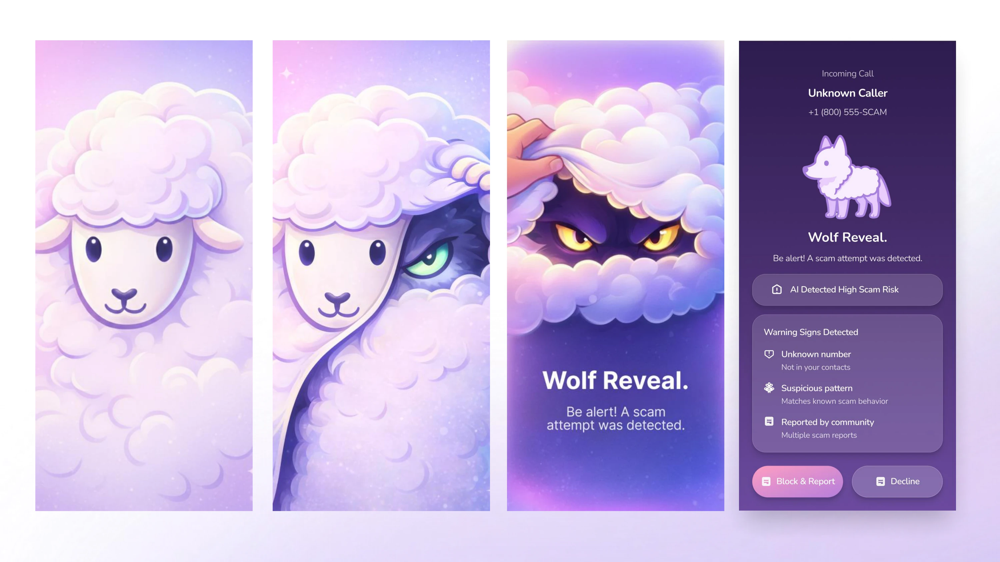
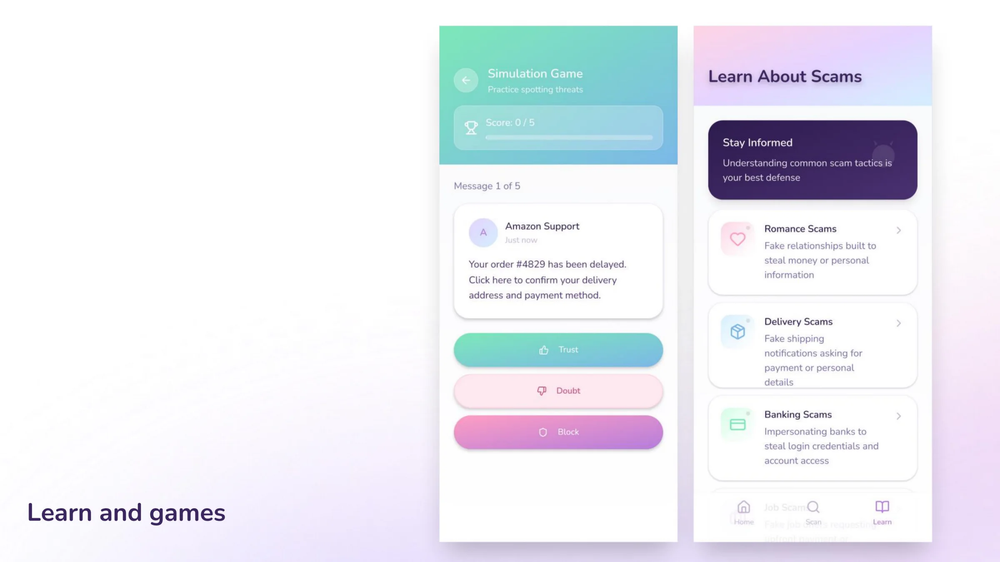
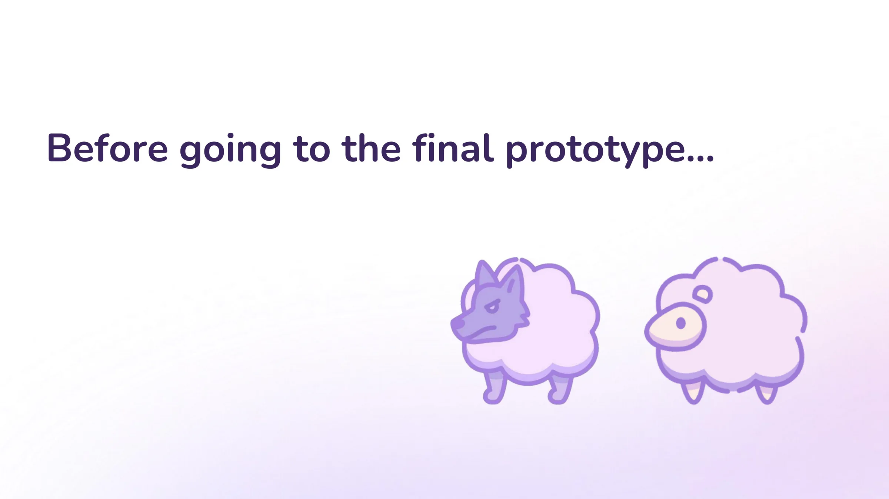
Before Final Prototype
That informed the next round, focused on stronger hierarchy, larger core icons, and a warning state with more urgency.
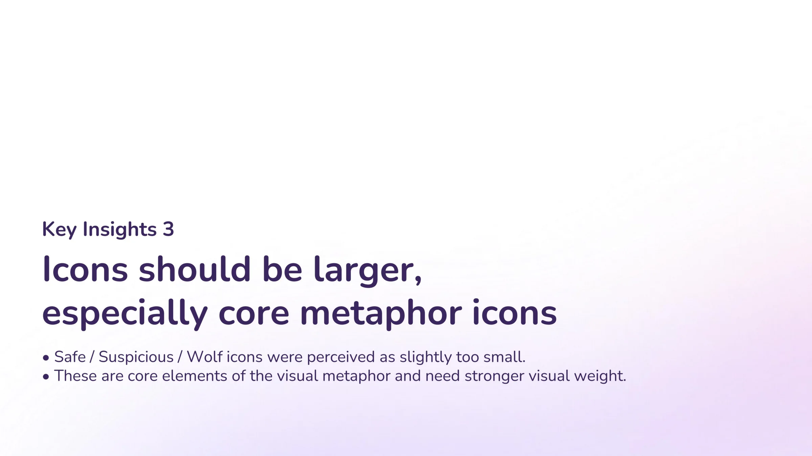
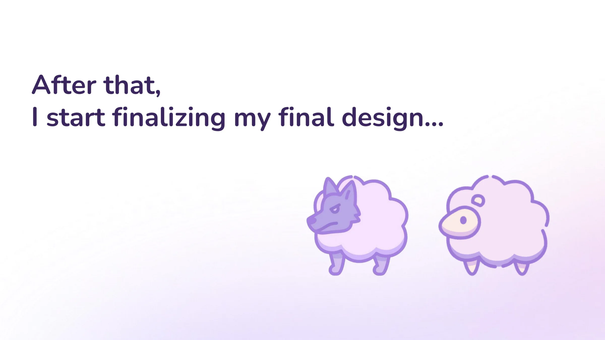
Reflection
This project was less about building a fully technical security tool and more about designing the emotional layer around trust, doubt, and decision-making. The final direction balances softness with urgency so users can feel guided instead of frightened, while still knowing when to act fast.